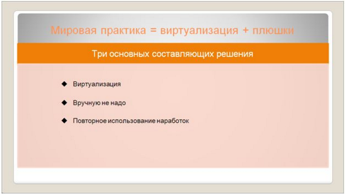
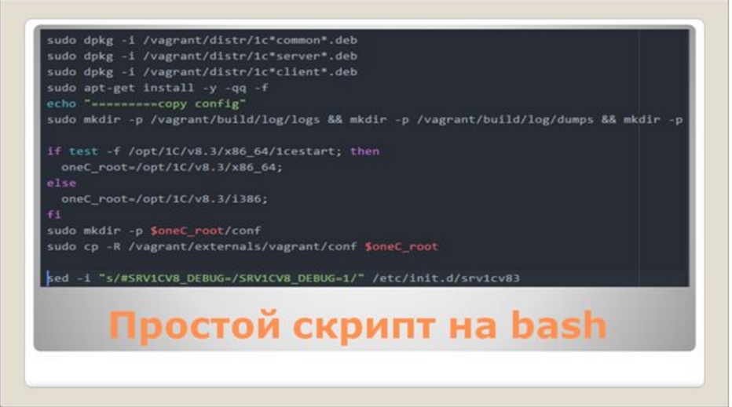

В предлагаемой статье речь пойдет про такие инструменты виртуализации, как Vagrant и Docker.
Проблемы разработки 1С, связанные с особенностями интеграции
Когда вы выходите за рамки 1С, у вас могут возникнуть проблемы. Это часто происходит в случаях, когда вы уже не можете работать в рамках одной конфигурации, и у вас помимо 1С появляются еще какие-топродукты, с которыми нужно обмениватьсяданными.
Первая проблема связана с тестированием функционала. Мы привыкли, что у нас есть cf-ник, и этого достаточно, чтобы протестировать свой продукт и запустить его в работу. Но когда появляется различная интеграция (веб-сервисы или новые http-сервисы odata), протестировать их взаимодействие с новой версией 1С бывает очень тяжело и затратно по времени. Чаще это откладывают: «лучше я потом как-нибудь новую версию платформы 1С посмотрю».
Вторая проблема, с которой мы часто встречаемся, – это, конечно же, наш «сферический конь в вакууме»: когда мы «задеплоили» наши данные на рабочий сервер, и после этого узнаем, что теперь какой-то функционал не работает. В ответ мы часто запираемся в своей «сфере» и кричим: «у нас все работает».
Я сейчас говорю не о проблемах в базе данных, которые у программиста не воспроизводятся, а о проблемах настройки сервисов на уровне операционной системы и различных особенностях интеграции.
И третья проблема – это периодичность выпуска новых версий платформы.
Уже прошли те времена, когда мы по полгода обсуждали новую версию, потом еще два-три месяца ее настраивали, и потом, наконец-то, обновлялись на всех наших серверах. Сейчас новые версии платформы выпускаются практически беспрерывно, и многие заказчики сразу ставят нам условие, что они работают только на такой-то версии и обновляться пока что не готовы. Поэтому нам в наших решениях приходится поддерживать весь зоопарк версий платформы. Например, мы знаем, что для Бухгалтерии 3.0 должна быть установлена самая последняя версия платформы, а УТ10.3, наоборот, стабильно работаетна 8.3.4, и обновлять ее нам пока рискованно.
Чтобы полностью протестировать все наши обмены, все конфигурации, попробовать, как они будут работать с новыми версиями платформы, конечно, удобно использовать виртуализацию.
Виртуализация с «батарейками»

Виртуализация бывает разная.
DevOps со стороны программиста
Сейчас немного отвлечемся. Поговорим про DevOps со стороны самого программиста.
Если смотреть на это со стороны программиста 1С, то у нас эта проблема также может возникнуть. Например, когда к нам в разработку приходит новый человек, мы должны ему рассказать, какое программное обеспечение необходимо поставить и как его настроить, объяснить, как это все у нас работает. Напоминаю, что речь идет про веб-сервисы, http-сервисы, про обмены с различными программами, когда все не так прозрачно (не в одной 1C-конфигурации делается).
Vagrant
Для решения этой проблемы используется продукт, который называется Vagrant. Если вы начнете использовать Vagrant, то вам, в основном, будут нужны всего три команды:
Что такое Vagrant file? Это описание той виртуальной машины, которую вы хотите получить. Независимо от того, какого провайдера вы используете (VMWare, Hyper-V или VirtualBox), это описание будет практически везде одинаковое. В Vagrant file вы описываете, на основании какого образа операционной системы вам нужно создать виртуальную машину, какая память под нее будет выделена, какая сеть настроена, что должно быть скопировано на эту виртуальную машину для дальнейшей установки и какие скрипты нужно запустить, чтобы установить нужное вам программное окружение.
Vagrant file

Вот так выглядит сам Vagrant file. Это – DSL-инструкция, написанная на языке Ruby. По Vagrant file есть документация в сети.
Сам конфигурационный файл – один, но в зависимости от переменных окружения вы можете влиять на его поведение (на скриншоте видно, что при поиске образа виртуальной машины анализируется значение переменной окружения V8ERSION).
Вы можете передавать этот Vagrant file другим разработчикам, даже территориально разделенным. Нет необходимости передавать им весь шаблон виртуальной машины, который, бывает, занимает 3-4 ГБ. При запуске vagrantupу них автоматически скачается весь необходимый набор программ, все само установится и запустится.
В некотором смысле этот Vagrant file является вашим DevOps. И здесь он, в частности, представлен для 1С.
Если вы, например, напишете в google «vagrant logstash», то сможете найти там готовый Vagrant file для Logstash, скачать его, точно так же написать в командной строке «vagrant up», и у вас появится виртуальная машина с полностью настроенным окружением для экспериментов с Logstash.
А для программиста 1С мы с помощью настроек Vagrant file можем получить полностью рабочий контур для различных версий 1С:Предприятия, чтобы в нем поэкспериментировать. Этот рабочий контур может включать: Postgres, сервер 1С:Предприятие, Apache версии 2.2 (которая до сих пор 2.2) и т.д. И для запуска всего этого нам нужна только одна команда – vagrant up. По ней все само поднимется, установится, запустится. Надо будет только чуть-чуть подождать.
Скрипт инициализации для Vagrant

На скриншоте показан простейший bash-скрипт для Linux (в частности, для Ubuntu), который устанавливает все пакеты, необходимые для 1С-разработки.
Запуская этот скрипт, мы устанавливаем на нашу виртуальную машину все необходимые зависимости, копируем настройки технологического журнала (мы ведь говорим про разработчиков, поэтому нам нужно копировать эти настройки) и устанавливаем debug-режим сервера 1С:Предприятия. Каталог vagrant/distr/, который здесь указан – это просто папка с дистрибутивом платформы.
Есть еще один скрипт, который устанавливает Apache в случае публикации веб-сервисов и дополнительно ставит нам отладку на определенный IP-адрес, чтобы мы могли спокойно отлаживать веб-сервисы.
Это простые скрипты, в них перечислено выполнение простейших шагов.
Vagrant vs. Docker
Однако у Vagrant есть проблема: он работает только с полной виртуализацией, независимо от того, что мы используем (Virtual Box или Hyper-V). Vagrant– это в любом случае полная виртуализация, включающая виртуализацию железа. Поэтому он тяжелый для запуска и большой по размерам. Кроме того, считается, что его тяжело использовать для интеграции при запуске в Production.
Поэтому я расскажу об еще одном инструменте виртуализации на базе Linux, который называется Docker. Этот продукт использует паравиртуализацию, основанную на ядре Linux. По факту, Dockerвыполняет те же самые задачи и роли, что и Vagrant, только сразу в Linux, поэтому у него есть преимущество в скорости и размере. Правда, преимущество в размере при работе с 1С небольшое: другие Docker-контейнеры обычно имеют размер порядка 30-40 Мб в одном контейнере, а минимальный размер контейнера для 1С – это 1-2 Гб. Дело в том, что каталог с платформой 1С занимает довольно большой размер, и если нужно создавать несколько контейнеров для разных версий 1С (8.3.4, 8.3.6, 8.3.7), то дисковое пространство сразу же отъедается на 5-6 Гб.
Но, с другой стороны, если говорить про Vagrant, то там только на один контейнер расходуется около 5-7 Гб.
Поэтому Docker более удобен в размерах, но запускается только на Linux.
Особенности Docker
У Docker один контейнер является одним сервисом. Если вы в виртуальной машине поднимаете сразу же несколько сервисов (сервер 1С:Предприятие, толстый клиент, Apache, Postgres), то в Docker считается, что на каждый этот сервис вы должны поднять отдельный контейнер Docker.
К тому же у Docker немного другое представление конфигурационного файла (Dockerfile) для запуска контейнера. Например, как показано на скриншоте:
Поскольку Docker легко стартует, легко останавливается и легко ломается, то, если у нас запущено множество работающих сервисов, мы можем не знать, кто из них с кем и как взаимодействует. Для того чтобы соединить все эти контейнеры (микросервисы) вместе так, чтобы все работало правильно, используется утилита Docker Compose. Вы там описываете, какие Docker контейнеры у вас должны будут запуститься, а он уже сам будет следить, запущены ли они, и перезапускать их в случае необходимости.
Выглядит это так, как показано на скриншоте: простой текстовый файл docker-compose.yml, в котором описывается запуск определенных сервисов в Docker и их зависимости между собой.
В Docker Compose есть очень удобная вещь. Допустим, когда стартует тот же Apache, мы можем указать для него, что ему надо масштабироваться на три штуки: указываем «scale 3», запускается три Apache. Естественно, для Postgres это не подходит, но для сервера 1С:Предприятия это возможно, правда, приходится бороться с некоторыми моментами (например, с настройкой кластера серверов 1С:Предприятия).
Чем еще интересен Docker?
Сейчас максимальная версия Apache, с которой работает 1С для веб-сервисов, – это Apache 2.2. Но, если смотреть на последние версии Ubuntu или CentOS, там уже по умолчанию используется версия Apache 2.4, и установить поверх нее более старую версию Apache для нас проблемно, неудобно. В качестве решения мы можем указать в Docker file, что нам нужен Docker-контейнер именно на базе Cent OS 6, где по умолчанию установлен Apache версии 2.2, и в результате формируется Docker-контейнер с необходимой нам версией Apache.
Преимущества виртуализации
Если подвести краткий итог, то
Мы сейчас с вами говорили в основном про Linux, но Vagrant также может работать и на Windows. А поскольку работа в среде Windows нам тоже интересна, поговорим о том, что там можно еще использовать.
Дополнительные инструменты автоматического развертывания для Windows
Packer-windows
С Windows у нас есть проблема – это, конечно же, лицензионные отчисления. Мы просто так в интернете не можем выложить образ Windows, чтобы на основании этого бокса сформировалась нужная нам виртуальная машина.
Для этого существует специальная утилита, которая называется packer-windows. Основная задача этой утилиты – это создать подготовленный образ на базе Windows для Vagrant. В packer-windows есть определенные ссылки на сервера Microsoft, где он может сам автоматически выкачать ISO-образ Windows Server той версии, которая вам наиболее подходит (Windows Server 2008 или Windows Server 2012) – для них есть подготовленный файл ответа.
Если не выключить автоматическое обновление пакета, то запуск подготовки всего образа занимает пару часов (пока Windows скачает этот ISO, создаст образ, сеть, пользователей, пока все сформируется). И в результате – запустили на ночь и получили готовый образ Windows с минимально необходимыми настройками для подключения к Vagrant.
Chocolatey
Все-таки Windows у нас основан на GUI-интерфейсах, и мы там привыкли все устанавливать вручную, а это для скриптования не очень удобно. С этим сталкиваемся не только мы, весь мир тоже «болеет» этим. И родился инструмент, который называется Chocolatey – он немного похож на пакетный менеджер для Linux. Если знаете, в Linux мы в командной строке набираем:
apt-get install[program-name]
А в Chocolateyвсе то же самое, но только из командной строки Windows мы вызываем:
Choco install[program-name]
И здесь мы в качестве [program-name] можем указать либо git, либо sql server express – пакетный менеджер Chocolatey скопирует все, что нужно для установки, и установит необходимую нам программу в тихом режиме.
Пакетов для 1С на chocolatey.org нет, потому что мы их туда выкладывать не можем, но мы для своей инфраструктуры можем сами создать нужные пакеты.
Есть шаблон пакета: просто берем setup.exe, кладем в папку, и запаковываем в этот шаблон. На скриншоте показано, как выглядит установщик такого пакета – это просто код, написанный на Powershell. После этого мы можем выполнить команду
chocoinstall – yonecserver
И у вас установится сервер 1С:Предприятия или тонкий клиент – в зависимости от того, что вы пропишете в этом скрипте. Самое интересное, что все будет происходить в «тихом» режиме.
Допустим, вы с помощью утилиты packer-windows подготовили образ на базе Windows и сформировали пакет Chocolatey для 1С определенной версии (тут также поддерживается версионирование). В результате вы получаете готовый образ виртуальной машины, в котором установлен и IIS, и 1С – вам только останется либо вручную сделать публикацию 1С-овского веб-сервиса, либо написать для этого скрипт на Powershell.
Заключение
На скриншоте – картинка «для затравки», показывающая пример использования Docker для соединения с конкретной версией хранилища конфигурации. Дело в том, что когда в Docker развернуто несколько версий хранилища 1С, для разработчика единой точкой входа является доменное имя (оно состоит из номера версии, сервера и названия репозитория).
В заключение хочу сказать, что с 1С можно работать, используя такие технологии, как Consul, Docker. Вы можете использовать Apache2.2, поднимать различные версии сервера 1С, причем без разницы, на какой ОС вы этот сервер поднимаете – эта виртуализация может быть как в Windows, так и в Linux (но в любом случае это – виртуализация). И в результате вы получаете легкий способ тестировать различные рабочие окружения.
****************
Данная статья написана по итогам доклада, прочитанного на конференции INFOSTART EVENT 2015 CONNECTION 15-17 октября 2015 года.